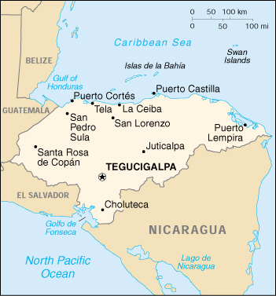

|
Honduras | |
| Introduction Geography People Government Economy Communications Transportation Military Transnational Issues | ||
|  | ||
| Honduras | Introduction | Top of Page |
| Background: | Part of Spain's vast empire in the New World, Honduras became an independent nation in 1821. After two and one-half decades of mostly military rule, a freely elected civilian government came to power in 1982. During the 1980s, Honduras proved a haven for anti-Sandinista contras fighting the Marxist Nicaraguan Government and an ally to Salvadoran Government forces fighting against leftist guerrillas. |
| Honduras | Geography | Top of Page |
| Location: | Middle America, bordering the Caribbean Sea, between Guatemala and Nicaragua and bordering the North Pacific Ocean, between El Salvador and Nicaragua |
| Geographic coordinates: | 15 00 N, 86 30 W |
| Map references: | Central America and the Caribbean |
| Area: |
total:
112,090 sq km
land: 111,890 sq km water: 200 sq km |
| Area - comparative: | slightly larger than Tennessee |
| Land boundaries: |
total:
1,520 km
border countries: Guatemala 256 km, El Salvador 342 km, Nicaragua 922 km |
| Coastline: | 820 km |
| Maritime claims: |
contiguous zone:
24 NM
continental shelf: natural extension of territory or to 200 NM exclusive economic zone: 200 NM territorial sea: 12 NM |
| Climate: | subtropical in lowlands, temperate in mountains |
| Terrain: | mostly mountains in interior, narrow coastal plains |
| Elevation extremes: |
lowest point:
Caribbean Sea 0 m
highest point: Cerro Las Minas 2,870 m |
| Natural resources: | timber, gold, silver, copper, lead, zinc, iron ore, antimony, coal, fish, hydropower |
| Land use: |
arable land:
15%
permanent crops: 3% permanent pastures: 14% forests and woodland: 54% other: 14% (1993 est.) |
| Irrigated land: | 740 sq km (1993 est.) |
| Natural hazards: | frequent, but generally mild, earthquakes; damaging hurricanes and floods along Caribbean coast |
| Environment - current issues: | urban population expanding; deforestation results from logging and the clearing of land for agricultural purposes; further land degradation and soil erosion hastened by uncontrolled development and improper land use practices such as farming of marginal lands; mining activities polluting Lago de Yojoa (the country's largest source of fresh water) as well as several rivers and streams with heavy metals; severe Hurricane Mitch damage |
| Environment - international agreements: |
party to:
Biodiversity, Climate Change, Climate Change-Kyoto Protocol, Desertification, Endangered Species, Hazardous Wastes, Law of the Sea, Marine Dumping, Nuclear Test Ban, Ozone Layer Protection, Tropical Timber 83, Tropical Timber 94, Wetlands
signed, but not ratified: none of the selected agreements |
| Honduras | People | Top of Page |
| Population: |
6,406,052
note: estimates for this country explicitly take into account the effects of excess mortality due to AIDS; this can result in lower life expectancy, higher infant mortality and death rates, lower population and growth rates, and changes in the distribution of population by age and sex than would otherwise be expected (July 2001 est.) |
| Age structure: |
0-14 years:
42.22% (male 1,381,823; female 1,322,684)
15-64 years: 54.21% (male 1,719,593; female 1,753,003) 65 years and over: 3.57% (male 108,271; female 120,678) (2001 est.) |
| Population growth rate: | 2.43% (2001 est.) |
| Birth rate: | 31.94 births/1,000 population (2001 est.) |
| Death rate: | 5.52 deaths/1,000 population (2001 est.) |
| Net migration rate: | -2.12 migrant(s)/1,000 population (2001 est.) |
| Sex ratio: |
at birth:
1.05 male(s)/female
under 15 years: 1.04 male(s)/female 15-64 years: 0.98 male(s)/female 65 years and over: 0.9 male(s)/female total population: 1 male(s)/female (2001 est.) |
| Infant mortality rate: | 30.88 deaths/1,000 live births (2001 est.) |
| Life expectancy at birth: |
total population:
69.35 years
male: 67.51 years female: 71.28 years (2001 est.) |
| Total fertility rate: | 4.15 children born/woman (2001 est.) |
| HIV/AIDS - adult prevalence rate: | 1.92% (1999 est.) |
| HIV/AIDS - people living with HIV/AIDS: | 63,000 (1999 est.) |
| HIV/AIDS - deaths: | 4,200 (1999 est.) |
| Nationality: |
noun:
Honduran(s)
adjective: Honduran |
| Ethnic groups: | mestizo (mixed Amerindian and European) 90%, Amerindian 7%, black 2%, white 1% |
| Religions: | Roman Catholic 97%, Protestant minority |
| Languages: | Spanish, Amerindian dialects |
| Literacy: |
definition:
age 15 and over can read and write
total population: 72.7% male: 72.6% female: 72.7% (1995 est.) |
| Honduras | Government | Top of Page |
| Country name: |
conventional long form:
Republic of Honduras
conventional short form: Honduras local long form: Republica de Honduras local short form: Honduras |
| Government type: | democratic constitutional republic |
| Capital: | Tegucigalpa |
| Administrative divisions: | 18 departments (departamentos, singular - departamento); Atlantida, Choluteca, Colon, Comayagua, Copan, Cortes, El Paraiso, Francisco Morazan, Gracias a Dios, Intibuca, Islas de la Bahia, La Paz, Lempira, Ocotepeque, Olancho, Santa Barbara, Valle, Yoro |
| Independence: | 15 September 1821 (from Spain) |
| National holiday: | Independence Day, 15 September (1821) |
| Constitution: | 11 January 1982, effective 20 January 1982; amended 1995 |
| Legal system: | rooted in Roman and Spanish civil law with increasing influence of English common law; recent judicial reforms include abandoning Napoleonic legal codes in favor of the oral adversarial system; accepts ICJ jurisdiction, with reservations |
| Suffrage: | 18 years of age; universal and compulsory |
| Executive branch: |
chief of state:
President Carlos Roberto FLORES Facusse (since 27 January 1998); note - the president is both the chief of state and head of government; First Vice President William HANDAL (since NA); Second Vice President Gladys CABALLERO de Arevalo (since NA); Third Vice President Hector Vidal CERRATO Hernandez (since NA)
head of government: President Carlos Roberto FLORES Facusse (since 27 January 1998); note - the president is both the chief of state and head of government; First Vice President William HANDAL (since NA); Second Vice President Gladys CABALLERO de Arevalo (since NA); Third Vice President Hector Vidal CERRATO Hernandez (since NA) cabinet: Cabinet appointed by president elections: president elected by popular vote for a four-year term; election last held 30 November 1997 (next to be held 25 November 2001) election results: Carlos Roberto FLORES Facusse elected president; percent of vote - Carlos Roberto FLORES Facusse (PL) 50%, Nora de MELGAR (PN) 40%, other 10% |
| Legislative branch: |
unicameral National Congress or Congreso Nacional (128 seats; members are elected proportionally to the number of votes their party's presidential candidate receives to serve four-year terms)
elections: last held on 30 November 1997 (next to be held 25 November 2001) election results: percent of vote by party - PL 46%, PN 38%, PINU-SD 4%, PDC 2%, PUD 2%; seats by party - PL 67, PN 55, PINU-SD 3, PDC 2, PUD 1 |
| Judicial branch: | Supreme Court of Justice or Corte Suprema de Justicia (judges are elected for four-year terms by the National Congress) |
| Political parties and leaders: | Christian Democratic Party or PDC [Efrain DIAZ Arrivillaga, president]; Democratic Unification Party or PUD [Marias FUNES Valladares, president]; Liberal Party or PL [Carlos Roberto FLORES Facusse, president]; National Innovation and Unity Party-Social Democratic Party or PINU-SD [Olban VALLADARES, president]; National Party of Honduras or PN [Carlos URBIZO, president] |
| Political pressure groups and leaders: | Committee for the Defense of Human Rights in Honduras or CODEH; Confederation of Honduran Workers or CTH; Coordinating Committee of Popular Organizations or CCOP; General Workers Confederation or CGT; Honduran Council of Private Enterprise or COHEP; National Association of Honduran Campesinos or ANACH; National Union of Campesinos or UNC; Popular Bloc or BP; United Federation of Honduran Workers or FUTH |
| International organization participation: | BCIE, CACM, ECLAC, FAO, G-77, IADB, IBRD, ICAO, ICFTU, ICRM, IDA, IFAD, IFC, IFRCS, ILO, IMF, IMO, Intelsat, Interpol, IOC, IOM, ISO (correspondent), ITU, LAES, LAIA (observer), MINURSO, NAM, OAS, OPANAL, OPCW, PCA, UN, UNCTAD, UNESCO, UNIDO, UPU, WCL, WFTU, WHO, WIPO, WMO, WTrO |
| Diplomatic representation in the US: |
chief of mission:
Ambassador Hugo NOE PINO
chancery: Suite 4-M, 3007 Tilden Street NW, Washington, DC 20008 telephone: [1] (202) 966-7702 FAX: [1] (202) 966-9751 consulate(s) general: Chicago, Houston, Los Angeles, Miami, New Orleans, New York, San Francisco, San Juan (Puerto Rico) honorary consulate(s): Boston, Detroit, and Jacksonville |
| Diplomatic representation from the US: |
chief of mission:
Ambassador Frank ALMAGUER
embassy: Avenida La Paz, Apartado Postal No. 3453, Tegucigalpa mailing address: American Embassy, APO AA 34022, Tegucigalpa telephone: [504] 238-5114, 236-9320 FAX: [504] 236-9037 |
| Flag description: | three equal horizontal bands of blue (top), white, and blue with five blue five-pointed stars arranged in an X pattern centered in the white band; the stars represent the members of the former Federal Republic of Central America - Costa Rica, El Salvador, Guatemala, Honduras, and Nicaragua; similar to the flag of El Salvador, which features a round emblem encircled by the words REPUBLICA DE EL SALVADOR EN LA AMERICA CENTRAL centered in the white band; also similar to the flag of Nicaragua, which features a triangle encircled by the word REPUBLICA DE NICARAGUA on top and AMERICA CENTRAL on the bottom, centered in the white band |
| Honduras | Economy | Top of Page |
| Economy - overview: | Honduras, one of the poorest countries in the Western Hemisphere, is banking on expanded trade privileges under the Enhanced Caribbean Basin Initiative and on debt relief under the Heavily Indebted Poor Countries (HIPC) initiative. While reconstruction from 1998's Hurricane Mitch is at an advanced stage, and the country has met most of its macroeconomic targets, it failed to meet the IMF's goals to liberalize its energy and telecommunications sectors. Economic growth has rebounded nicely since the hurricane and should continue in 2001. |
| GDP: | purchasing power parity - $17 billion (2000 est.) |
| GDP - real growth rate: | 5% (2000 est.) |
| GDP - per capita: | purchasing power parity - $2,700 (2000 est.) |
| GDP - composition by sector: |
agriculture:
16.2%
industry: 31.9% services: 51.9% (1999 est.) |
| Population below poverty line: | 53% (1993 est.) |
| Household income or consumption by percentage share: |
lowest 10%:
1.2%
highest 10%: 42.1% (1996) |
| Inflation rate (consumer prices): | 11% (2000 est.) |
| Labor force: | 2.3 million (1997 est.) |
| Labor force - by occupation: | agriculture 29%, industry 21%, services 50% (1998 est.) |
| Unemployment rate: | 28% (2000 est.) |
| Budget: |
revenues:
$607 million
expenditures: $411.9 million, including capital expenditures of $106 million (1999 est.) |
| Industries: | sugar, coffee, textiles, clothing, wood products |
| Industrial production growth rate: | 4% (1999 est.) |
| Electricity - production: | 3.319 billion kWh (1999) |
| Electricity - production by source: |
fossil fuel:
44.71%
hydro: 55.29% nuclear: 0% other: 0% (1999) |
| Electricity - consumption: | 3.232 billion kWh (1999) |
| Electricity - exports: | 0 kWh (1999) |
| Electricity - imports: | 145 million kWh (1999) |
| Agriculture - products: | bananas, coffee, citrus; beef; timber; shrimp |
| Exports: | $2 billion (f.o.b., 2000 est.) |
| Exports - commodities: | coffee, bananas, shrimp, lobster, meat; zinc, lumber |
| Exports - partners: | US 35.4%, Germany 7.5%, El Salvador 6.4%, Guatemala 5.8%, Nicaragua 4.8% (1999) |
| Imports: | $2.8 billion (f.o.b., 2000 est.) |
| Imports - commodities: | machinery and transport equipment, industrial raw materials, chemical products, fuels, foodstuffs |
| Imports - partners: | US 47.1%, Guatemala 7.4%, El Salvador 5.9%, Mexico 4.8%, Japan 4.7% (1999) |
| Debt - external: | $5.4 billion (2000) |
| Economic aid - recipient: | $557.8 million (1999) |
| Currency: | lempira (HNL) |
| Currency code: | HNL |
| Exchange rates: | lempiras per US dollar - 15.1407 (December 2000), 15.1407 (2000), 14.5039 (1999), 13.8076 (1998), 13.0942 (1997), 12.8694 (1996) |
| Fiscal year: | calendar year |
| Honduras | Communications | Top of Page |
| Telephones - main lines in use: | 234,000 (1997) |
| Telephones - mobile cellular: | 14,427 (1997) |
| Telephone system: |
general assessment:
inadequate system
domestic: NA international: satellite earth stations - 2 Intelsat (Atlantic Ocean); connected to Central American Microwave System |
| Radio broadcast stations: | AM 241, FM 53, shortwave 12 (1998) |
| Radios: | 2.45 million (1997) |
| Television broadcast stations: | 11 (plus 17 repeaters) (1997) |
| Televisions: | 570,000 (1997) |
| Internet country code: | .hn |
| Internet Service Providers (ISPs): | 8 (2000) |
| Internet users: | 20,000 (2000) |
| Honduras | Transportation | Top of Page |
| Railways: |
total:
595 km
narrow gauge: 349 km 1.067-m gauge; 246 km 0.914-m gauge (1999) |
| Highways: |
total:
15,400 km
paved: 3,126 km unpaved: 12,274 km (1999 est.) |
| Waterways: | 465 km (navigable by small craft) |
| Ports and harbors: | La Ceiba, Puerto Castilla, Puerto Cortes, San Lorenzo, Tela, Puerto Lempira |
| Merchant marine: |
total:
313 ships (1,000 GRT or over) totaling 760,819 GRT/820,582 DWT
ships by type: bulk 21, cargo 187, chemical tanker 7, container 4, livestock carrier 2, passenger 2, passenger/cargo 4, petroleum tanker 52, refrigerated cargo 17, roll on/roll off 8, short-sea passenger 5, specialized tanker 2, vehicle carrier 2 note: includes some foreign-owned ships registered here as a flag of convenience: Russia 4, Singapore 2, Vietnam 1 (2000 est.) |
| Airports: | 119 (2000 est.) |
| Airports - with paved runways: |
total:
12
2,438 to 3,047 m: 3 1,524 to 2,437 m: 2 914 to 1,523 m: 4 under 914 m: 3 (2000 est.) |
| Airports - with unpaved runways: |
total:
107
1,524 to 2,437 m: 2 914 to 1,523 m: 21 under 914 m: 84 (2000 est.) |
| Honduras | Military | Top of Page |
| Military branches: | Army, Navy (includes Marines), Air Force |
| Military manpower - military age: | 18 years of age |
| Military manpower - availability: | males age 15-49: 1,515,101 (2001 est.) |
| Military manpower - fit for military service: | males age 15-49: 902,220 (2001 est.) |
| Military manpower - reaching military age annually: | males: 72,335 (2001 est.) |
| Military expenditures - dollar figure: | $35 million (FY99) |
| Military expenditures - percent of GDP: | 0.6% (FY99) |
| Honduras | Transnational Issues | Top of Page |
| Disputes - international: | with respect to the maritime boundary in the Golfo de Fonseca, the ICJ referred to the line determined by the 1900 Honduras-Nicaragua Mixed Boundary Commission and advised that some tripartite resolution among El Salvador, Honduras, and Nicaragua likely would be required; the maritime boundary dispute with Nicaragua in the Caribbean Sea is before the ICJ |
| Illicit drugs: | transshipment point for drugs and narcotics; illicit producer of cannabis, cultivated on small plots and used principally for local consumption; corruption is a major problem; vulnerable to money laundering |
{kind=link}